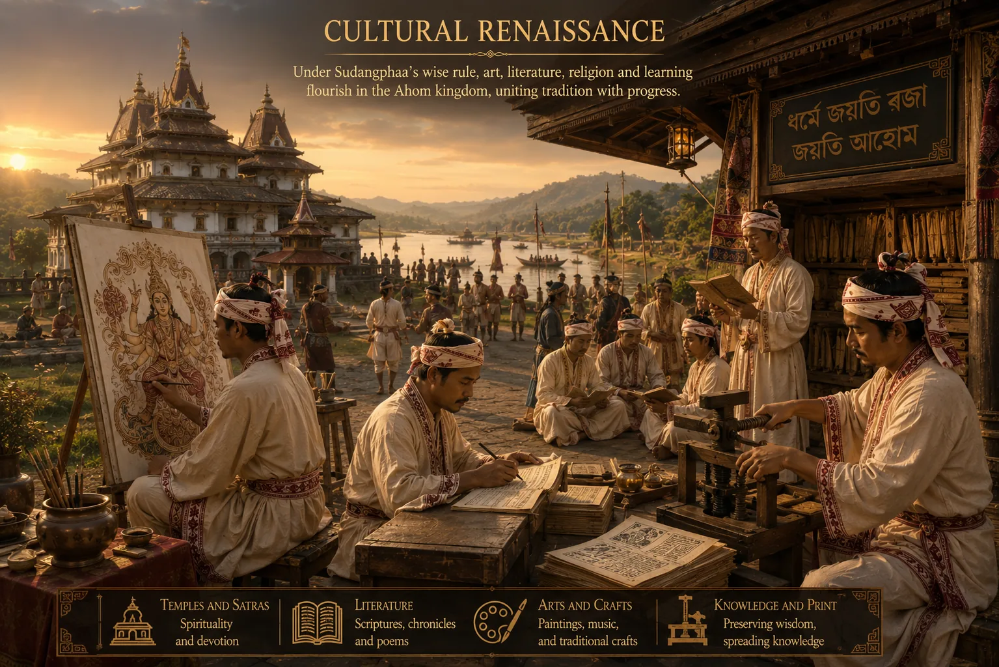

Cultural Renaissance and Literary Patronage
c. 1405 · The coming of Sukaphaa

Sudangphaa patronizes both Tai chroniclers and Sanskrit scholars, fostering bilingualism and literary learning in court.
Sources have not yet been catalogued for this record.
People: Sudangphaa (Bamuni Konwar)
Open this scene in the interactive archive · Follow this event on MAP